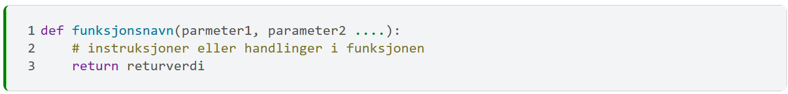

6. Funksjoner#
Det vi har gått gjennom i de foregående kapitlene gir oss, i prinsippet, alt vi trenger for å skrive enkle programmer. Vi kan lagre og manipulere data i variabler, kontrollere gangen i programmene med if-tester og håndtere grupper av objekter med løkker og lister eller dict’er. For små og relativt oversiktlige oppgaver er dette tilstrekkelig. Når oppgaven blir større og litt mer komplisert (som programmeringsoppgaver ofte er), blir programmene våre store, uoversiktlige og vanskelige å vedlikeholde. Da kan vi ta i bruk funksjoner.
Hva er funksjoner#
En funksjon i et program er en sekvens av instruksjoner, med navn, som utfører en bestemt oppgave, og som andre deler av programmet kan kalle på (i betydning rope på) når den bestemte oppgaven skal utføres. Funksjoner gir oss muligheten til å strukturere våre programmer. De gjør det også lettere å gjenbruke programmeringsinnsats. Det vil si at man bruker gammel programkode som noen har skrevet tidligere, til å løse nye problemer. I dette kapitlet ser vi stort sett på bruk av funksjoner som noen andre har skrevet for oss. Vi vier også litt plass til å vise hvordan man lager funksjoner, om ikke annet, for bedre å forstå funksjonene vi bruker.
En analogi fra matlagingens verden#
Forestill deg en bestemt oppgave som ikke har noe med programmering å gjøre, nemlig det å lage hvit saus. Hvit saus kan brukes til forskjellige retter, men lages nokså likt for alle disse. Det er derfor naturlig å definere laging av hvit saus som en egen deloppgave i matlagingen. Overført til programmering, snakker vi om å skrive en funksjon som lager hvit saus, og som ulike program som “fiskeBolleMiddag” eller “blomkålsGrateng” kan bruke. Vi kommer tilbake til dette eksemplet underveis i kapitlet.
Eksempel på en egendefinert funksjon#
Vi har allerede brukt noen Python-funksjoner, og såvidt introdusert
begrepet (se len-funksjonen i forrige kapittel. Funksjonen kan gjerne ses på som et
hjelpeprogram, med navn. Eller en byggeblokk.
I cellegruppen nedenfor definerer vi vår første funksjon, med navn og innhold, og kjører den. Når vi kjører celle [1], skrives ikke noen ting ut. I celle [2] kaller vi på funksjonen, og da blir linje 3 i definisjonen i celle [1] (innholdet i funksjonen) utført. I celle [3] kaller vi funksjonen tre ganger. Dette gjør vi for å illustrere at en funksjon som er definert èn gang, kan kalles på mange ganger, selv om det akkurat her ikke representerer en stor besparelse. Dette er ikke den eneste fordelen med bruk av funksjoner, men om vi hadde hatt en funksjon hvis innhold er på 100 linjer, ville denne fordelen ha vært tydeligere. Da ville vi sluppet å skrive linjene hver gang vi vil ha innholdet utført.
1# celle [1]
2def printHallo():
3 print("Hallo")
1# celle [2]
2printHallo()
Hallo
1# celle [3]
2printHallo()
3printHallo()
4printHallo()
Hallo
Hallo
Hallo
For å oppsummere::
Funksjonen defineres (celle [1]) med Python ordet
defog med navn, etterfulgt av innhold.Navnet skal etterfølges av parenteser
(), i dette tilfellet tomme.Hver gang funksjonen kalles, utføres instruksjonen(e) spesifisert i den.
✍️ Oppgave: Med utgangspunkt i cellene over, lag din egen funksjon i din egen notebook. Gi funksjonen et eget navn og eget innhold.
Å skrive en funksjon er det samme som å lage en ny Python-kommando til eget bruk. Funksjoner skrives ofte i separate filer. Disse filene gjøres tilgjengelig for forskjellige programmer som bruker dem. Funksjoner kan imidlertid også skrives i den samme notebook som bruker (kaller på) dem[1]. Funksjonen kan til og med skrives i samme celle, men da foran programbitene som kaller på dem.
printHallo i eksempelet over er en
egendefinert funksjon. Vi skrev den selv og den utgjør en
lokal utvidelse vi har gjort i Python-språket til bruk i konteksten (cellen eller notebooken) den er definert i. Andre kontekster enn denne kan
ikke bruke slike lokale utvidelser, med mindre vi gjør
disse eksplisitt tilgjengelige for dem.
Innebygde funksjoner er, derimot, tilgjengelig for alle som programmerer i Python. Disse er vanlig å ta i bruk når man jobber med dataanalyser.
Typer funksjoner#
Funksjoner, uavhengig om de er egendefinerte eller innebygde, kan deles inn i tre hovedkategorier
rene kommandoer: utfører nøyaktig samme instruksjoner hver gang den kalles, slik som
printHalloi eksempelet ovenforfunksjoner med parametre som spesifiserer handlingen
funksjoner (med eller uten parametre) som returnerer verdier.
Dersom vi alltid lager samme mengde med hvit saus, og den alltid skal
smake likt, blir funksjonen lagHvitSaus() en ren kommando.
Når kokken i huset sier
“lag hvit saus, er du snill”,
vet du
nøyaktig hva du skal gjøre.
Virkeligheten er ofte mer sammensatt. Mengden hvit saus vil kanskje avhenge av hvor mange som skal spise middag, eller andre forhold. Kokken i huset vil muligens si: “Lag 1 liter hvit saus” eller, hvis dere venter gjester, “lag 5 liter hvit saus”. Mengden hvit saus er et parameter. Den spesifiserer oppgaven nærmere.
For begge eksemplene ovenfor er utfallet gitt, og trenger ikke
spesifiseres nærmere. Resultatet av funksjonskallet blir en mengde
hvit saus, som kan brukes der og da. Er du derimot en kokk i en
restaurant, kan det hende du må lage tre forskjellige varianter hvitsaus i
løpet av en time, til forskjellige retter som er bestilt. Da vil
hver av mengdene saus måtte spesifiseres som et konkret
resultat av funksjonskallet
lagHvitSaus. Da skriver vi funksjonen slik at den, før den
avsluttes, leverer fra seg en verdi som kelneren – eller
kjøkkensjefen – tar imot for å bruke til den bestemte retten. Dette kalles å returnere en verdi.
Innebygde funksjoner#
Innebygde Python-funksjoner er funksjoner som alle kan bruke. Mange av instruksjonene vi bruker ofte (for eksempel
print), er innebygde funksjoner. Noen har skrevet dem, og plassert dem i et felles funksjonsbibliotek. Funksjoner i slike bibliotek (engelsk: “libraries”) utfører oppgaver som de fleste
programmerere trenger ofte. Noen av disse brukes så ofte at de
oppleves som en del av ”kjernespråket”, men de er egentlig ikke det. I motsetning til nøkkelord som if,
else, while og for, er ikke print(), len() og
andre slike en del av kjernespråket. De er navn på innebygde funksjoner.
⚠️ Merk! Funksjonsbibliotek fungerer som utvidelser til Python.
Noen innebygde Python-funksjoner#
De fleste innebygde funksjoner i Python har parametre, og bruker derfor
argumenter. Et eksempel vi kjenner fra før er print("en tekststreng"), en funksjon som skriver ut (verdien til) argumentet.
Den funksjonen vi så langt har brukt oftest er, uten tvil, funksjonen
print(). print() er en enkel funksjon, og kalles på med ett eller flere
argumenter. Dett er verdiene som skal printes, gjerne representert med variabler. Funksjonens handling er å skrive
verdien(e) ut til output.
⚠️ Merk! Argumentet til print kan enten være direkteverdier[2] eller variabler, men det er uansett verdien i variabelen som printes.
I eksemplet nedenfor brukes
print() i noen vanlige situasjoner.
1tall=5
2tekst="et eksempel"
3print("et eksempel") # Et tekstargument som direkteverdi
4print(tekst) # Et tekstargument lagt i en variabel
5print(5) # Et tallargument som direkteverdi
6print(tall) # Et tallargument lagt i en variabel
7print(tekst, tall)
et eksempel
et eksempel
5
5
et eksempel 5
Eksempel på en innebygd retur-funksjon#
En annen funksjon vi har allerede sett i bruk, er funksjonen len(). Den anvendes på flerverdi-“ting”.
Disse “ting” kan være lister, dict’er, til og med tekststrenger. len() returnerer lengden av verdien den anvendes på. Se eksemplene nedenfor.
Legg merke til at fordi len() returnerer en verdi, kan et kall til den anses som en slags “dynamisk” variabel. For eksempel kan funksjonskallet være argument til print(). Det vil si at vi kombinerer to ulike funksjoner slik at den ene gir en output av noe den andre funksjonen har returnert som verdi.
print(len("Michael"))
7
✍️ Oppgave: Kopier innholdet i cellen over i din egen celle og be den istedet printe navnet “Nina”. Kan du tenke deg til hva tallet i output er en lengde på?
studenter=["Arne", "Gerd", "Mona"]
fodselsdager={"arne":"12. juni", "Gerd": "20. desember"}
print(len(studenter)) #Lengden av en liste
print(len(fodselsdager)) # Lengden av en dict
print(len("Michael")) # Lengden av en tekststreng
3
2
7
Innebygde funksjoner er sentralt i Del III, når vi skal gjøre datanalyse med Pandas, som er et av de mest brukte funksjonsbibliotekene når man skal jobbe med større datasett.
Under følger en nærmere detalj-beskrivelse av hvordan ulike typer funksjoner fungerer med utgangspunkt i hvordan lage egne. Her går vi nærmere gjennom parametre, argumenter og returneringer.
Enkle egendefinerte funksjoner#
Vi skriver egendefinerte funksjoner
når vi identifiserer en oppgave som gjøres ofte (og det ikke finnes en innebygd funksjon som gjør samme nytten)
når vi ønsker å gjøre våre programmer lettere å forstå. Med andre ord, ganske ofte.
Når vi skal skrive en egendefinert funksjon, pakker vi instruksjonene inn i en blokk som ser slik ut

Funksjonen døpes med navn og legges et sted som er tilgjengelig for programmet (eller notebok-cellen) som trenger den. Det kan være enten i samme cellen som selve koden ligger i, en annen celle i samme notebook, eller i en spesiell fil (et funksjonsbibliotek eller en mindre modul) som gjøres tilgjengelig for programmet. Programmet kan kalle (rope på) funksjonen for å utføre handlingen spesifisert med instruksjonene.
I eksempelet nedenfor definerer vi funksjonen
skrivOpphavsRett. Denne ligner på printHallo som vi skrev
tidligere. Når den kalles, skriver den en fast tekststreng til en
tekst, en copyright-seksjon.
1def skrivOpphavsRett():
2 print(""" Denne teksten er beskyttet av opphavsrett.
3 Dersom du ønsker å kopiere fra den eller bruke den
4 til andre formål enn personlig bruk, må du
5 kontakte Michael Preminger. """)
6
7print("Her er en tekst som ska beskyttes.")
8skrivOpphavsRett()
Her er en tekst som ska beskyttes.
Denne teksten er beskyttet av opphavsrett.
Dersom du ønsker å kopiere fra den eller bruke den
til andre formål enn personlig bruk, må du
kontakte Michael Preminger.
⚠️ Merk! Fra utskriften ser man at teksten
som er kodet i funksjonsdefinisjonen Denne teksten er beskyttet... kommer etter innholdet på filen Her er en tekst ..., selv om det i programmet står før
sistnevnte.
Når funksjonen blir definert (altså: at linjene med funksjonsdefinisjonen blir kjørt) utføres det egentlig ingen ting. I definisjonen står bare handlingene som funksjonen skal utføre dersom og når den blir kalt. Disse handlingene blir lagret i minne i tilknytning til funksjonsnavnet, slik at når cellen over begynner å kjøre, blir først innholdet til teksten skrevet ut, og deretter blir funksjonen kalt , slik at opphavsrettsteksten skrives ut. Altså, er det setningen på linjen 8 som utløser det som ble avtalt på linjene 1-5.
Egendefinerte funksjoner med parametre#
Vi har allerede nevnt at parametre kan brukes til å spesifisere funksjonens handlinger. Et parameter er en spesiell type variabel. Parametre gjør funksjonene mer fleksible og anvendelige.
Funksjonen skrivOpphavsRett() gjør nøyaktig det samme
hver gang den kalles. Har Michael Preminger mange tekster han
ønsker å opphavsrettsmerke, skriver han funksjonen èn gang (det har
han gjort …), gjør funksjonen tilgjengelig for programmene han
bruker, og
kaller den for hver nettside som skal beskyttes. Allerede her ligger
en stor besparelse.
Men mer kan oppnås. Det er vanlig å hevde opphavsrett til tekster. Det vil si at det er flere, ikke bare Michael Preminger, son kan tenkes å ville gjøre det på samme måte. Funksjonen i eksemplet nedenfor kan brukes av hvem som helst til å beskytte sine dokumenter.
1def skrivOpphavsRett2(fornavn, etternavn):
2 print(""" Denne teksten er beskyttet av opphavsrett.
3 Dersom du ønsker å kopiere fra den eller bruke den
4 til andre formål enn personlig bruk, må du
5 kontakte """ + fornavn + " " + etternavn+".")
6print("Her er en tekst som ska beskyttes.")
7skrivOpphavsRett2("Jens", "Olsen")
Her er en tekst som ska beskyttes.
Denne teksten er beskyttet av opphavsrett.
Dersom du ønsker å kopiere fra den eller bruke den
til andre formål enn personlig bruk, må du
kontakte Jens Olsen.
I eksemplet ovenfor blir fornavn og etternavn på linje 1 parametre, og “Jens” og “Olsen” (linje 7) argumenter. Parametrene
gjør at funksjonen defineres èn gang, og kan deretter brukes av
forskjellige opphavspersoner, representert ved argumentene.
Referansene fornavn og etternavn på linje 5 i funksjonsdefinisjonen, gjør at
argumentverdiene
(i vårt eksempel Jens hhv, Olsen) blir
skrevet ut.
I eksemplet nedenfor brukes den samme funksjonen, denne gangen med verdiene servert funksjonen i variabler heller enn direkte tekstverdier. For funksjonen er dette hipp som happ.
1fnavn="Jens"
2enavn="Olsen"
3print("Her er en tekst som skal beskyttes.")
4skrivOpphavsRett2(fnavn, enavn)
Her er en tekst som skal beskyttes.
Denne teksten er beskyttet av opphavsrett.
Dersom du ønsker å kopiere fra den eller bruke den
til andre formål enn personlig bruk, må du
kontakte Jens Olsen.
⚠️ Merk! Definisjonen av skrivOpphavsRett2 er å finne i cellen over denne cellen.
✍️ Oppgave: Kopier innholdet fra cellene over og hevd opphavsrett til din egen tekst. Bruk gjerne variabler og ikke direkte tekstverdier for navnet ditt.
Funksjoner kan ha så mange parametre som programmereren finner
nødvendig. Funksjonen
skrivOpphavsrett2 har to parametre med hver sitt
unike navn. Ved kall til funksjonen, har hver parameter sitt argument, og rekkefølgen av argumentene skal gjenspeile rekkefølgen i parametrene.
Egendefinerte funksjoner med returverdi#
Funksjoner med returverdi kan sammenlignes med å interagere med en drikkeautomat. En drikkeautomat tar imot argumenter (pengebeløp og produktvalg), og gir tilbake en kopp, med innhold (og mengde) som styres av argumentverdiene.
På tilsvarende måte kan en funksjon produsere en verdi mens den
kjører. Kommandoen return sørger for at verdien gjøres tilgjengelig for programmet som kalte på funksjonen.
En funksjon med en returverdi kan kalles som i eksemplet nedenfor.
I eksemplet nedenfor ser du to funksjoner som håndterer to parameterverdier på to forskjellige måter. Den ene, i linje 1, printer resultatet direkte og er dermed en handling, og den andre, linje 5 som returnerer resultatet og kan dermed ses på som en dynamisk variabel.
1def printInvertertForm(fornavn, etternavn):
2 invertert=etternavn+", "+fornavn
3 print(invertert)
4
5def returnerInvertertForm(fornavn, etternavn):
6 invertert=etternavn+", "+fornavn
7 return invertert
I eksemplet nedenfor kjøres de to funksjone hhv. èn og to ganger.
1printInvertertForm("Michael", "Preminger")
2# print er i linja over, returnert er i linjene under
3inv1 = returnerInvertertForm("Michael", "Preminger")
4fornavn="Jens"
5etternavn="Olsen"
6inv2=returnerInvertertForm(fornavn, etternavn)
7print("returnert:", inv1)
8print("returnert:", inv2)
Preminger, Michael
returnert: Preminger, Michael
returnert: Olsen, Jens
For å oppsummere eksemplene:
Kommandoen return i linje 7 i funksjonsdefinisjonen ovenfor har følgende rolle:
funksjonen avgir verdien i angitt variabel til programmet som kalte den
funksjonen avsluttes, og programmet kjører videre, utstyrt med den nye verdien (se variablene
inv1oginv2), som det kan bruke videre.
Funksjonen minstAv nedenfor har to parametre, og tar derfor to argumenter. Den returnerer et tall, som er dèt med minst verdi av de to argumentene.
1def minstAv(tall1, tall2):
2 if tall1 < tall2:
3 return tall1
4 else:
5 return tall2
6
7print(minstAv(2,4))
2
✍️ Oppgave: Med utgangspunkt i funksjonen over, gjør endringer slik at den printer det største av to tall istedet.
Vi sa tidligere at en funksjon som returnerer en verdi kan ses på som en dynamisk variabel.
Av det følger at en slik funksjon har også en datatype. Typen returverdi definerer hvilken type funksjonen har.
Vi sier at funksjonen returnerInvertertForm() er en tekstfunksjon, mens minstAv() er en tallfunksjon.
Funksjoner i komplekse datatyper og moduler#
De fleste som programmerer i Python bruker funksjoner som er definert i moduler og i komplekse datatyper. Slike datatyper er definert i python som klasser og objekter. Sistnevnte er ikke en del som denne boka ser det nødvendig å dekke utfyllene, men vi tar allikevel en kort gjennomgang under, særlig fordi ulike datatyper kommer med funksjoner, som det kan være greit å vite om.
Klasser, objekter og datatyper#
Hvorfor kommer ulike datatyper med noen “ferdige” funksjoner “på kjøpet”?
Dette har å gjøre med objektorientert programmering. Objektorientert programmering springer ut av ønsket om at programmer skal representere verden som “agenter” (forenklede representasjoner av reelle ting i verden) som interagerer (“snakker”) med hverandre. For eksempel kan en representasjon av en person “kjøpe” en representasjon av en bil, ved at eier-egenskapen til sistnenvte endres til å være denne personen (representert ved navn eller personnummer, for eksempel).
Bil-representasjonen er forenklet til behovet, og trenger, for dette formålet her, ikke ha andre egenskaper enn “eier”. Representasjonen av denne bilen trenger ikke ha egenskaper som farge eller vekt, hvis alt programmet trenger å vite er hvem som eier denne bilen. Deri ligger forenklingen.
Disse representasjonene er definert i Python som objekter av klasser.
Enda et eksempel: et program som skal holde orden på en skole, må ha representasjoner (klasser) for lærere, elever, rom og bygninger. Så kan man opprette objekter (representasjoner av konkrete lærere, elever og rom) basert på disse klassene.
Så langt har vi forholdt oss til slike klasser som komplekse datatyper. Dette kan vi fortsatt gjøre, selv om vi har innført begrepet klasse. En klasse er, altså, en modell (mal, om du vil) for typer objekter. Vi sier at klasser har egenskaper (variabler) og oppførsel (funksjoner).
Eksempel på komplekse datatyper som vi allerede har møtt i denne boka, er tekststrenger, lister og dicter. Alle disse datatypene har variabler og funksjoner koblet til dem. Variablene er egenskapene, og funksjonene (oppførselen) kalles ofte metoder, og muliggjør handlinger som er forbundet med disse typene (veldig ofte innebærer dette å endre verdier i variablene). I databehandling og -analyse er det funksjoner som kalles metoder vi ofte tyr til for å få til det vi vil.
Funksjoner for datatypen tekststreng#
En sekvens med tegn (bokstaver, tall eller spesialtegn) som angis mellom enkle eller doble anførselstegn, antas av Python å være en verdi (objekt) av datatypen (klassen) tekstreng, og en god del funksjoner er tilgjengelig for disse. Se for eksempel metoden replace i cellen nedenfor.
1"Jeg liker epler".replace("epler", "bananer")
'Jeg liker bananer'
Det er dog vanligere å se slike funksjoner anvendt på en variabel med en tekststreng som verdi, som vist nedenfor.
1tekst = "Jeg liker epler"
2ny_tekst = tekst.replace("epler", "bananer")
3print(ny_tekst)
Jeg liker bananer
replace() er en av flere metoder som er definert for tekststreng-typen. Se ellers dokumentasjonen til str i Python’s formelle dokumentasjon eller i W3Schhols .
Funksjoner for datatypen liste#
Bruken av lister er forklart og eksemplifisert i et tidligere kapittel. Nedenfor her fokuseres det på funksjoner (metoder) definert for denne typen. En funksjon vi har brukt en del er funsjonen append(), som legger en ny innførsel bakerst i listen.
1liste = ["eple", "banan", "appelsin"]
2liste.append("mango")
3liste
['eple', 'banan', 'appelsin', 'mango']
Men hva gjør vi om vi ønsker å “forlenge” listen med noen flere frukter?
for eksempel liste2 = ["klementin", "pære", "drue"] ?
Vi kan prøve med append:
1liste = ["eple", "banan", "appelsin"]
2liste2 = ["klementin", "pære", "drue"]
3liste.append(liste2)
4liste
['eple', 'banan', 'appelsin', ['klementin', 'pære', 'drue']]
Som du ser av utskriften, ble liste2 lagt til som den siste innførselen i liste. Det var ikke det vi ville.
For å få det slik vi ønsker, bruker vi metoden (funksjonen) .extend().
1liste = ["eple", "banan", "appelsin"]
2liste2 = ["klementin", "pære", "drue"]
3liste.extend(liste2)
4liste
['eple', 'banan', 'appelsin', 'klementin', 'pære', 'drue']
⚠️ Merk! Det er en viktig forskjell på str.replace() og list.append() eller list.extend(). Mens de to sistnevnte er handlinger, altså de anvendes på listen de kjøres på slik at den opprinnelige listen endres, er str.replace() slik at den returnerer en ny streng. Den opprinnelige strengen endres ikke, men en kopi, med endringen, lages og returneres.
Funksjoner for datatypen dict#
Vi har allerede definert dict som en datatype som holder flere verdier pekt til av nøkler. Liksom tekststreng og liste, har også dict-typen funksjoner (metoder) knyttet til seg. Eksempler er dict.keys(), dict.values() og dict.items(), som returnerer innholdet i dicte’en på forskjellige former. I eksemplene nedenfor anvendes disse på en enkel dict. Legg spesielt merke til at items() legger dicten ut som tupler, en tuppel per dict-innførsel.
1dicten = {"en" : 1, "to" : 2, "tre" : 3}
2for i in dicten.keys():
3 print(i)
en
to
tre
1for i in dicten.values():
2 print(i)
1
2
3
1for i in dicten.items():
2 print(i)
('en', 1)
('to', 2)
('tre', 3)
Funksjoner definert i moduler#
En modul er en “pakke” med klasser og funksjoner. Disse er enten innebygd i Python, eller kan installeres med kommandoen pip. For å bruke disse i en Notebook eller .py-fil[3], må import-kommandoen brukes.
math- modulen er et eksempel på en modul som har mange funksjoner som tilbyr matematiske operasjoner på tall-variabler. I cellen nedenfor er det noen enkle eksempler på bruken av math-modulen. Legg merke til at disse både tar parametre og returnerer verdier (det finnes også slike funksjoner til List og Dict - typene som ikke vises her).
1import math
2print("heltallet over 1.4 =", math.ceil(1.4))
3print("heltallet under 1.5 =", math.floor(1.5))
4print("kvadratroten av 4 = ", math.sqrt(4))
heltallet over 1.4 = 2
heltallet under 1.5 = 1
kvadratroten av 4 = 2.0
Eksempelprogram som bruker klasser og moduler#
Eksemplet nedenfor viser et eksempel på et program som bruker en modul (io) og to innebygde klasser (str og list) til å lese en fil med tall i, og skrive en ny fil.
Modulen io har funksjoner (blant annet open() og close() som vi bruker), og klasser, blant annet en filklasse (TextIOWrapper) som vi bruker to objekter av: innfil og utfil. TextIOWrapper har metodene readlines() som returnerer linjene i filen innfil som en liste av str - objekter, og writelines() som tar en liste av str - objekter og lagrer denne til filen “fleretall.txt” representert av utfil-objektet. close() metoden lagrer og lukker filen. For å gjenskape dette eksemplet trenger du tekstfilen “mangetall.txt” som har tallene 1 - 10 inkludert, på hver sin linje, i samme mappe som programmet kjører fra.
1import io
2innfil=io.open('./mangetall.txt')
3
4# Les alle linjene
5talliste=innfil.readlines()
6
7for tall in talliste:
8 print(tall.strip()) # strip() viser tallet uten linjeskift
9
10talliste.append("11")
11utfil=io.open("./fleretall.txt", "w")
12utfil.writelines(talliste)
13utfil.close()
1
2
3
4
5
6
7
8
9
10
I dette siste eksemplet kom det plutselig en god del nye metoder, samt at koden også leser av en bestemt fil. Mye nytt introduseres plutselig i dette eksempelet. Meningen er ikke at du skal nå lære deg alle disse funksjonene, men istedet få et innblikk i noe du vil kunne gjøre etter å ha gjennomført bokas del III. Men da skal vi ta i bruk funksjonsbiblioteket Pandas og jobbe med spesifikke datasett knyttet til litteratur. Fordelen med Pandas er at du kan se hvordan ting endrer seg i et datasett ettersom du bruker ulike funksjoner for å håndtere datasettet og videre foreta analyser. Du vil i bokas del III bli godt kjent med en håndfull ulike funksjoner som du vil bruke ofte. Vi håper gjennomgangen over vil være til hjelp for å skjønne hva som faktisk skjer når du bruker funksjoner.